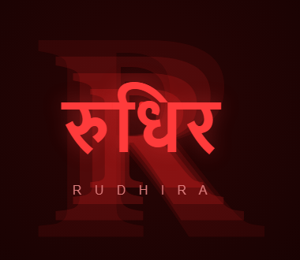

VentureX 2026, Problem Statement 8
We don't sell blood. We stop wasting its plasma.
A hub-and-spoke model that keeps India's blood supply funded by selling only the plasma that would otherwise expire unused.
Frozen plasma holds its value for a year. Most of it never gets the chance.
Blood banks are not badly run. They are badly funded, by design.
The processing fee a blood centre may charge is fixed by the National Blood Transfusion Council. That ceiling is the ethical floor of the whole system and should not move. But it also means a centre cannot price its way out of a cost problem, which is exactly the problem most of them have.
A single whole-blood donation splits into three products with completely different economics. Red cells are the clinical product everyone thinks of, priced at a government-set ceiling. Platelets last five days and are hard to plan around. Plasma is the anomaly: it freezes for about a year, is produced automatically on every donation, and hospitals clinically need far less of it than gets collected.
Most Indian blood centres are small. Nearly 4,000 of them process only a few thousand units a year each, yet the fixed costs of running a centre, the nucleic acid testing (NAT) platform that screens for HIV and hepatitis, the component-separation equipment, the cold chain, barely change with volume. Small centres absorb the same fixed cost as large ones and never reach the scale to recover it.
The result is visible in the discard data. Plasma is the component with the longest shelf life and it is still the single largest category of blood-product waste in the country, because most small centres cannot separate, freeze, and route it fast enough to reach anyone who wants it before it expires.
The fix is not a collection app. It is where the plasma goes.
Rudhira never sells blood. Donors give voluntarily and are never paid. Patients pay the same government-capped fee as anywhere else. What changes is that plasma nobody is going to transfuse gets frozen correctly and sold, under an existing NBTC-sanctioned channel, to a licensed Indian fractionator instead of expiring in a freezer.
Pooled collection
Many small, cheap mobile drives feed one hub instead of each running its own equipment. Pooled inventory across the cluster also cuts expiry losses, since combined demand varies less than any single site's.
One licensed hub
The NAT platform, component separator, and cold chain that a small centre cannot afford alone are shared across the whole cluster, amortized over far more donations.
Surplus only, audited
Plasma goes to a fractionator only once it is documented as unissued ahead of a fixed pre-expiry cutoff. Clinical demand always has first claim, and the surplus ratio is published, not discretionary.
The arithmetic, per donation
Same fully-loaded cost of Rs 1,829 in every scenario. What changes is the fee ceiling a centre operates under, and whether unissued plasma is discarded or sold under contract to a fractionator.
Plasma revenue is not the whole fix, and we are not pretending it is.
At the government fee ceiling, routing surplus plasma to a fractionator narrows the loss from Rs 429 to Rs 409 per unit. It does not close it. The Rs 1,829 base cost has to fall too, and that only happens through volume: NAT and component-separation equipment are largely fixed cost, so a hub serving many spokes spreads that cost over far more donations than any single small centre does today.
We have not found a sourced, published figure for exactly how much a consolidated hub cuts per-unit cost, so we model it as a labelled sensitivity, not a claim. Assuming plasma is routed to the fractionator throughout: a 15 percent reduction in base cost (to about Rs 1,555) narrows the government-rate loss to roughly Rs 135 per unit. A 25 percent reduction (to about Rs 1,372) turns it into a profit of roughly Rs 48 per unit. Getting there is a volume and operations problem, not a pricing problem, which is exactly why the model is a hub, not a bigger version of the same small centre.
Plasma yield assumed at 0.2 litres per 450ml donation, a standard clinical approximation, at the Rs 1,600 per litre fractionator price actually paid for surplus plasma in India (see sources).
Capital cost is real, and it does not pretend to be self-funding on day one.
An advanced hub, NAT platform, component separation, apheresis, cold chain, costs an estimated Rs 1.5 to 4 crore to set up. At a Rs 41 margin per unit, one hub would need roughly 88,000 donations in a single year just to amortise a mid-range Rs 2.5 crore build over seven years, before covering any of its own operating margin twice over. That is too high a bar to clear from a standing start.
So the model is explicit about sequencing: capital cost is funded once, by CSR or grant capital, the way public health infrastructure normally is. What has to be self-sustaining, and what PS 8 actually asks for, is the day-to-day operating economics after that: processing fees plus fractionator plasma revenue covering the ongoing cost of running the hub, without donor payment and without raising the price a patient pays.
Try your own assumptions
This runs the same arithmetic as the grid above for the fractionator route. The clinical-only baseline isn't reproduced here since it works on a flat Rs 300 per-unit fee, not a per-litre market price, so the two aren't the same kind of number.
Why this does not commercialize blood
Paying for blood is illegal in India for good reason, and the incentive risk in any plasma-revenue model is real: an operator paid for volume has a reason to over-collect. Rudhira is built to remove that incentive structurally, not promise to resist it.
The donor is never paid
Every unit is collected through voluntary, unpaid donation drives. No fee, discount, or incentive is tied to donating, which keeps the model on the correct side of the Supreme Court's direction to phase out professional donation entirely.
The patient pays the same capped fee
Hospitals are charged the same NBTC-ceiling processing fee they would pay any blood centre. Plasma revenue does not raise the clinical price, and it does not buy any hospital preferential access to red cells.
Blood itself is never sold
The only product transferred for revenue is plasma that has already been documented as surplus to clinical need, ahead of a fixed pre-expiry cutoff, into the fractionation channel NBTC guidelines already permit blood centres to use.
Clinical demand has first claim, always
The surplus ratio, the share of collected plasma that is ever routed to a fractionator, is capped, audited, and published. No plasma is withheld from a hospital that needs it in order to sell it elsewhere.
Donors get value, not payment
Common Cause v. Union of India (1996) is unambiguous: blood and plasma can never be bought or sold, and no donor reward can be cash, a cash-equivalent, or a discount tied to donating. Rudhira's donor program is built entirely from non-monetary rewards, health services, recognition, and priority access, across four tiers keyed to donation frequency in a rolling 12-month window.
| Tier | Threshold (rolling 12 months) | Health benefit | Other benefits |
|---|---|---|---|
| Bronze | 1st donation | Baseline screening on every donation: haemoglobin, blood pressure, weight, pulse | Digital donor certificate, donor badge |
| Silver | 2 to 3 donations | + one free annual basic panel: CBC, blood sugar, cholesterol | Priority queue at donation camps, donor community access |
| Gold | 4 to 5 donations, the medical ceiling for whole blood | + one free annual comprehensive panel: CBC, lipid profile, liver and kidney function, thyroid, with priority scheduling at partner diagnostic centres | Featured recognition in the newsletter and on social media, with consent, plus early access to camps near the donor |
| Plasma Elite | 6+ donations on the plasma or apheresis track | + the Gold panel plus ECG and a vitamin and mineral panel, plus micro health-insurance for donation-related complications | VIP recognition, a seat on the donor advisory council |
Plasma Elite is a separate ladder, not a higher rung
Apheresis donors can safely donate far more often than whole-blood donors, so the platform counts the two tracks independently. A donor who qualifies on both holds whichever tier is higher for benefit purposes.
The window rolls, it does not reset on a fixed date
Every verified donation recalculates the donor's tier from a trailing 365-day count, not a calendar year. An upgrade applies the moment a threshold is crossed. A downgrade only takes effect if the count is still short 30 days later, so one slow month does not cost a donor their tier.
Every entitlement is dated, it never stacks
Each tier's checkup benefit is issued once per 12-month cycle, not once per donation. It has to be booked at a partner diagnostic centre inside that cycle or it lapses; unused entitlements do not carry over or accumulate.
Donation counts come from the blood bank, never from the donor
A donation only counts toward tier progress once a partner blood bank or camp confirms it through the platform. Nothing a donor enters in the app can move their own tier.
One verified identity, one donor record
Registration is tied to a platform-verified ID (Aadhaar e-KYC or equivalent), stored as a hashed reference rather than the number itself, so a second account cannot reset a donor's threshold. The same check blocks a donation from counting if it falls inside the mandatory medical gap since the last one, 90 days for whole blood, a shorter, medically set gap for plasma.
How a tier reads inside the app
Where the pilot goes
Three candidates, compared on the state's existing blood-bank density, metro population, and whether this exact transaction has already happened there.
| City | State | Metro population | Licensed blood banks in state | Precedent |
|---|---|---|---|---|
| Nagpur | Maharashtra | 3.17M | 370, highest of any state | AIIMS Nagpur has already sold over 1,000 litres of surplus plasma to a fractionator, RTI-disclosed |
| Indore | Madhya Pradesh | 3.48M | 133 as of the last national assessment | None found |
| Coimbatore | Tamil Nadu | 3.22M | 265 as of the last national assessment | None found |
The pilot goes to Nagpur, and precedent is the reason, not population.
Indore's metro area is larger, and Tamil Nadu has more licensed blood banks than Madhya Pradesh, but neither has a documented instance of a public institution actually selling surplus plasma to a fractionator. Nagpur does. That means the legal, logistical, and institutional channel this whole model depends on has already been used once in this exact city, by a public hospital, with the transaction disclosed under RTI. A first pilot should spend its risk budget on proving the hub-and-spoke economics, not on being the first to test whether the fractionator channel works at all.
Path to viability
Capital first, then operations, then replication, laid out month by month so there is a checkable exit condition at every stage, not just at the end of the year.
Close capital and lock the offtake agreement
Raise Rs 1.5 to 4 crore in CSR or grant capital, select the pilot city, and sign a standing offtake agreement with a licensed Indian fractionator before construction starts, not after, so the plasma revenue line is contracted, not assumed.
Build the hub
Install the NAT platform, component-separation equipment, and cold chain; hire and train staff; begin the NABL accreditation process in parallel rather than after opening.
Onboard the first spokes
Bring three to five mobile collection drives, college, corporate, and residential, online against the hub, and start pooled component separation with the surplus-tracking log running from day one.
First plasma shipment and first public report
Ship the first batch of documented-surplus plasma to the fractionator, and publish the first quarterly report on the surplus ratio and per-unit margin, the same reporting format for the whole pilot.
Scale spokes, stress-test the audit
Add spokes as capacity allows, publish the second quarterly report, and treat any gap between the modeled and measured surplus ratio as a finding to correct, not a number to smooth over.
Confirm operating breakeven
Compile a full year of operating data and confirm the hub clears breakeven on processing fees and plasma revenue alone, independent of the capital already spent, exactly what PS 8 asks for.
Replicate to a second city
Only once the first hub's numbers are public and independently verifiable, license the same hub design, offtake structure, and audit process to a second city, funded this time in part by the first hub's own operating surplus.
What could break this
Stated plainly, because a judge will ask anyway.
Questions judges tend to ask
Expand any of these. If the answer you're looking for isn't here, it's probably in the risks or compliance sections above.
Isn't routing plasma to a fractionator just commercialising blood by another name?
No. The donor is unpaid, the patient's fee does not change, and blood itself is never transferred for money. What is sold is plasma that has already been logged as unissued ahead of a fixed pre-expiry cutoff, into a fractionation channel NBTC guidelines already permit. The distinction is not semantic: it is what makes the model legal.
Why not just ask NBTC to raise the processing-fee ceiling instead?
That ceiling exists so a patient's access to blood never depends on ability to pay. Raising it would fix the funding gap by making transfusion more expensive for patients, which is the outcome the model is explicitly designed to avoid. Working within the existing cap, and funding the gap from a different source, is the harder but correct constraint to accept.
What if the fractionator simply refuses to renew the offtake contract?
The hub still has to clear breakeven on the capped processing fee and collection volume alone, without counting on plasma revenue. Plasma is modeled as the margin on top of that floor, not the floor itself. Contracting with more than one fractionator where the local market allows it reduces this risk further.
Who checks that the published surplus ratio is accurate?
The pilot proposes quarterly reporting to the relevant state blood transfusion council, with the same unissued-status and pre-expiry-cutoff logs available to an independent auditor on request. This is a governance detail to formalise during the pilot, not an afterthought bolted on once the model is running.
Why would an existing blood bank hand its volume to a new hub?
It does not have to give up its donor relationships or identity. The hub is a shared processing utility: NAT testing, component separation, cold chain, and the fractionator relationship, that a small centre cannot afford to build alone. A centre plugs its collection drives into the hub and keeps everything else it already does.
What exactly are you asking for right now?
Rs 1.5 to 4 crore in CSR or grant capital for one pilot hub, a signed offtake agreement with a licensed fractionator, and twelve months to publish quarterly operating numbers in public. Nothing beyond that pilot is being asked for yet.
What we are asking for
A pilot: one hub, three to five spokes, one fractionator offtake agreement, one hospital network, twelve months, with quarterly public reporting on the surplus ratio and the per-unit margin.

Entrepreneurship Cell, IIT (ISM) Dhanbad
Sources and methodology
- NBTC processing-fee ceilings for whole blood and red cells: thehealthmaster.com reporting on state blood transfusion council rates and the NACO guidelines on recovery of processing charges.
- Fresh frozen plasma wastage, over 3 lakh units in a reported year, more than half of national blood-component discards: News Nation reporting on national blood-bank discard data.
- Rs 1,600 per litre paid for surplus plasma: Medical Dialogues, RTI disclosure on AIIMS Nagpur's plasma sale.
- Per-unit cost of blood with component preparation and NAT testing (Rs 1,829): Activity-wise unit cost of blood components, Indian Journal of Hematology and Blood Transfusion, 2018 data.
- Blood centre setup costs by tier: Adrine, how to start a blood bank in India.
- National plasma supply and fractionation capacity: Invest India, overview of blood plasma fractionation in India.
- India plasma fractionation market size and growth: Mordor Intelligence, India plasma fractionation market report.
- Licensed blood banks by state (Maharashtra, Madhya Pradesh, Tamil Nadu): Statista, India licensed blood banks by state, 2022 and the NACO Assessment of Blood Banks in India, 2016.
- Metro population figures for Nagpur, Indore, and Coimbatore: Macrotrends, Nagpur metro population, Macrotrends, Indore metro population, and Coimbatore metropolitan area, Wikipedia, citing 2025 to 2026 growth-rate estimates.
Figures above are sourced as cited. Two figures on this page are explicitly modeled, not sourced, and are labelled inline where they appear: the per-unit cost reduction from hub-scale consolidation, and the seven-year straight-line capex amortisation used to estimate breakeven volume. Both are stated as assumptions for a pilot to test, not as claims.